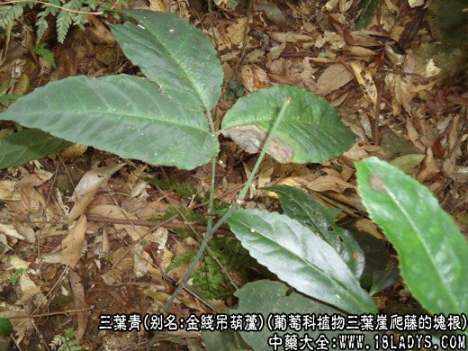
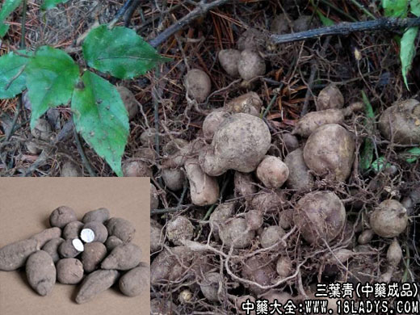
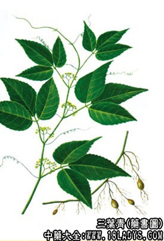

别名：金线吊葫芦，丝线吊金钟(广东)，石老鼠(江西)，石猴子(湖南)，三叶崖爬藤(福建)。
来源：本品为葡萄科植物三叶崖爬藤的块根。
历史：三叶青未见于古代本草。《植物名实图考》所载蛇附子的图很像三叶青，谓：“蔓生茎如初生小竹有节，一枝三叶，叶长有尖圆齿疏纹，对叶生须，……根大如麦冬，侄医以治 小儿退热、止腹痛，取浆冲服。
植物形态：多年生蔓生藤本。块根形状多样，纺锤形、葫芦形、卵形或椭圆形，表面棕褐色，内面白色。茎细弱，下部节上生根，卷须与叶对生，红色，顶端常有吸盘。三出复叶互生，小叶卵状披针形，边缘有疏锯齿，中间小叶较大，两侧小叶基部偏斜，有叶柄。花 小，黄绿色，杂性，聚伞花序腋生;花4小;花瓣4;花盘与子房合生;子房2室。浆果球形，熟时黑色。花期5一6月，果期7-8月。
分布于长江以南各地。生于阴湿山坡、山沟或溪谷旁林下。
产地：产于湖北、湖南、江西、浙江、广西等地。民间药用。
采收加工：全年可采根，洗净晒干。
贮藏：置干燥处。
性味：微苦，平。
功效与作用：清热解毒，祛风化痰。主治：①小儿高热惊厥：配钩藤，七叶一枝花，水煎服。②肺炎、哮喘。③肝炎：配虎刺根、茜草，水煎服。④外伤出血：研末敷患处。
食用方法：3~10g，水煎服。
药理作用：对肝功能的作用：金线吊葫芦(三叶青)注射液具有促进肝细胞吸收和吞噬放射性四碘四氯荧光素的功能，并对家兔四氯化碳中毒有一定保护作用。金线吊葫芦含氮提取物有抗炎镇痛作用。